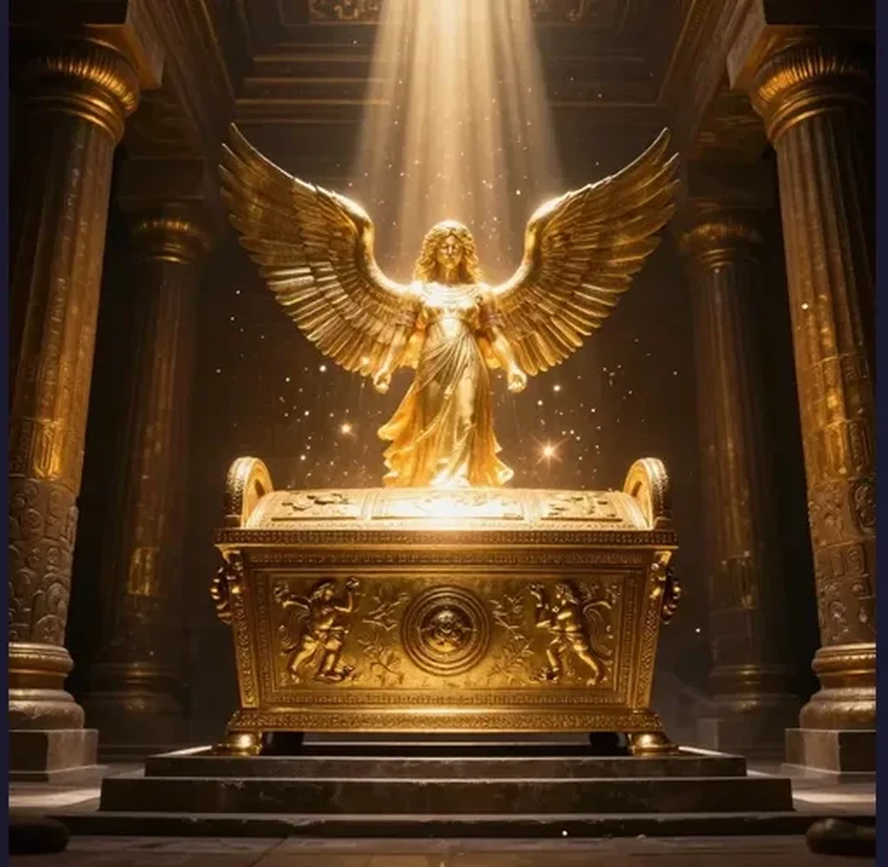

Ark of the Covenant: The Golden Chest That Contained God's Power and Vanished Without a Trace

The Ark of the Covenant, described in the Bible as a golden chest containing the Ten Commandments, was the most sacred object in ancient Israel before it vanished from history over 2,500 years ago
According to the Book of Exodus, God gave Moses very exact instructions on Mount Sinai. Build a chest of acacia wood, he was told. It should be two and a half cubits long, a cubit and a half wide, and a cubit and a half high. Cover it with pure gold, inside and out.
Make a gold lid with two cherubim, which are winged angel figures. They face each other with their wings spread upward over the mercy seat. Place inside the chest the stone tablets of the Ten Commandments.
This was the Ark of the Covenant. According to the Hebrew Bible, it was much more than a sacred object. It was the home of God on Earth, a portable throne. From it the Creator of the universe spoke straight to Moses and guided the fate of a whole nation.
The Ark parted the Jordan River. It brought down the walls of Jericho. It struck down anyone who touched it without permission. The Israelite army carried it into battle. People believed it brought God’s protection and sure victory.
For centuries it rested in the innermost room of Solomon’s Temple in Jerusalem. This was the Holy of Holies. It was so sacred that only the High Priest could enter, and only once a year, on Yom Kippur.
Then, in 587 or 586 BCE, the armies of Nebuchadnezzar of Babylon destroyed Jerusalem. They burned the Temple. And the Ark of the Covenant vanished from history. The Bible never says what happened to it. No archaeologist has ever found it. No physical proof of it has ever been recovered.
It is one of the most famous lost objects in the world. After about two and a half thousand years, it is as hard to find as ever.
The instructions for building the Ark appear in Exodus 25:10-22. God tells Moses to make a chest that will be the throne of his presence among the Israelites. A craftsman named Bezalel built it. Exodus says he was filled with the Spirit of God, with wisdom, understanding, and skill in every kind of craft.
The Ark was built during the forty years the Israelites wandered in the wilderness after they escaped from Egypt. It became the center of the Tabernacle, the portable holy tent that traveled with them.
The Ark was fairly small. It was about 3.75 feet long, 2.25 feet wide, and 2.25 feet high (about 1.1 x 0.7 x 0.7 meters). It was made of acacia wood, a tough desert hardwood. It was covered in pure gold inside and out.
Four gold rings were fixed to its lower corners. Two gold-covered acacia poles slid through the rings, so that it could be carried.
The lid was called the mercy seat (kapporet in Hebrew). It was a slab of pure gold. Two cherubim, winged angel figures, were hammered onto it. They faced each other with wings spread upward. According to Exodus, God would appear in a cloud above the mercy seat and speak to Moses from between the cherubim.
The New Testament Book of Hebrews (9:4) says what was inside the Ark. There were three sacred objects. The first was the stone tablets of the Ten Commandments. The second was a golden jar of manna, the miracle food God gave during the wilderness journey. The third was Aaron’s rod, which had miraculously sprouted buds as a sign that God had chosen the priests.
Later parts of the Bible mention only the stone tablets. So the other items may have been lost or taken out at some point in the Ark’s long history.
Before it came to rest in Solomon’s Temple, the Ark lived a dramatic life. The Israelites carried it ahead of their army as they crossed the Jordan River into the Promised Land. According to Joshua 3, the waters parted the moment the priests carrying the Ark stepped into the river.
Then the Ark was carried around the city of Jericho for seven days. After that, the walls famously fell. Some people read these stories as real history, and some read them as sacred symbols. Either way, they made the Ark an object of great power. It was not a quiet relic. It was a force on the battlefield.
Then came the capture by the Philistines. In 1 Samuel 4, the Israelites took the Ark into battle against the Philistines. They hoped it would bring victory. Instead, they lost, and the Ark was captured.
The Philistines took it to Ashdod and put it in the temple of their god Dagon. According to 1 Samuel 5, the statue of Dagon fell face-down before the Ark. The next morning it fell again, and this time its head and hands broke off.
Worse, the people of Ashdod fell sick with tumors. Some people think this was the bubonic plague. The Philistines moved the Ark to Gath, then to Ekron, and the sickness followed.
After seven months of suffering, the Philistines put the Ark on a cart pulled by two milk cows. They sent it back toward Israelite land. With it went a guilt offering of gold models of tumors and mice. It is one of the stranger scenes in the Bible.
One of the most dramatic stories about the Ark is the death of Uzzah. In 2 Samuel 6, King David is taking the Ark to Jerusalem on a cart pulled by oxen. The oxen stumble. Uzzah reaches out his hand to steady the Ark, as anyone might do. God strikes him dead on the spot for touching the sacred object.
David was so frightened that he refused to bring the Ark into Jerusalem for three months. He left it at the house of Obed-Edom the Gittite.
The story shows a main idea of the Bible. The Ark was not just a sign of God’s presence. It was God’s presence. The same power that could part rivers and topple cities could also destroy anyone who came near without proper respect and permission.
Only the Kohathite Levites, one clan of the priestly tribe, were allowed to carry the Ark. They were forbidden to touch it directly. They could not even look at what was inside.
Later the Ark reached Jerusalem. King David carried it in triumph, after the death of Uzzah had delayed the journey. David danced before the Ark with such joy that his wife Michal despised him for it.
The Ark stayed in a tent in the City of David. Then David’s son Solomon built the First Temple. He placed the Ark in the Holy of Holies, the innermost room of the holiest building in the Israelite world.
According to 1 Kings 8, the priests put the Ark in place and stepped back. A cloud filled the Temple. It was “the glory of the Lord,” and it was so strong that the priests could not stand to do their work. The Ark had found its home.
And then, nothing. In 587 BCE (some scholars say 586), Nebuchadnezzar II, king of Babylon, laid siege to Jerusalem. He broke through its walls and destroyed Solomon’s Temple. He took the Israelite leaders away into exile.
The destruction is told in detail in 2 Kings 25 and Jeremiah 52. The Temple was burned. Its treasures were looted. Its bronze pillars and its great bronze basin, called the bronze sea, were broken up.
These texts list the objects the Babylonians took. They name gold, silver, bronze vessels, and precious things. The Ark of the Covenant is never mentioned. It is not listed as taken. It is not listed as destroyed. It is not listed as hidden. It simply disappears from the story.
This silence is deafening. For centuries the Ark had been the most important object in Israelite worship. It was the throne of God. Yet when the Temple burned, no biblical writer said what happened to it.
This gap has led to many guesses, theories, and legends. It is the central mystery of the Ark. Was it destroyed in the Babylonian fire, its gold melted down and its wood turned to ash? Was it secretly taken away before the attack and hidden in a place known only to a trusted few? Or had it already been moved years, or even decades, before Nebuchadnezzar’s army came?
The Dead Sea Scrolls were found at Qumran in the 1940s and 1950s. Among them was a document unlike any other. It is called the Copper Scroll (3Q15). It is written on thin sheets of copper, not on parchment or papyrus.
The scroll lists sixty-four places where gold, silver, and other treasures were said to be hidden. Some scholars think it describes treasures of the Second Temple, hidden before the Romans destroyed Jerusalem in 70 CE. Others say it comes from the First Temple, Solomon’s Temple. Some even think it was a hoax.
The scroll does not name the Ark. But some writers have wondered if a few of the listed treasures could be linked to it. Scholars still argue about what the scroll means. None of the treasures it names have ever been found.
One of the best-known stories about what happened to the Ark comes from Ethiopia. The Kebra Nagast (“The Glory of Kings”) is an Ethiopian epic, put into the Ge’ez language in the 14th century. It says the Queen of Sheba visited King Solomon in Jerusalem. She had a son by him named Menelik I.
When Menelik grew up, he went to Jerusalem to meet his father. Solomon tried to make him stay, but Menelik insisted on going back to Ethiopia. Before he left, the Kebra Nagast says, Menelik and a group of Israelite nobles secretly took the Ark with them. In some versions Solomon quietly agreed. In others it was plain theft. The Ark was carried to Aksum in northern Ethiopia, and it has stayed there ever since.
The Ethiopian Orthodox Tewahedo Church says the Ark rests in the Church of Our Lady Mary of Zion in Aksum. It is kept in a small chapel called the Chapel of the Tablet. According to Ethiopian tradition, one monk guards it. He is called the Guardian of the Ark. He is chosen for life, and he is the only person allowed to enter the chapel and see the sacred object. When he dies, a new Guardian is chosen.
No outsider has ever been allowed to see the Ark. Outside scholars have never been allowed to examine the chapel or what is in it.
The claim is remarkable, and doubters point to serious problems. The Kebra Nagast reached its known form in the 14th century CE. That is about two thousand years after the Ark was supposed to have left Jerusalem. No source from Solomon’s time confirms its story of the Queen of Sheba’s visit.
The Church insists on total secrecy, so nobody can check the claim. The church’s own history also makes things less simple. The first Church of St. Mary of Zion in Aksum is believed to date to the 4th century CE. The present chapel was built in 1965 under Emperor Haile Selassie.
If the Ark has been in Aksum since the time of Solomon, as the tradition says, it has lived through nearly three thousand years of wars, invasions, and unrest. That is in a region not known for being calm.
Many other theories exist. According to 2 Maccabees 2:4-8, the prophet Jeremiah hid the Ark, the Tabernacle, and the incense altar in a cave on Mount Nebo. He sealed the entrance. He said the place would stay unknown until God gathers his people again.
Some people think the Ark was hidden in a secret room under Solomon’s Temple before the Babylonians came. The Bible also hints that it may have been moved earlier, in the time of King Josiah (2 Chronicles 35:3).
Many scholars think the Babylonians simply destroyed the Ark. They may have melted it down for its gold, along with other Temple treasures, when Nebuchadnezzar’s army looted Jerusalem.
Some fringe theories link the Ark to the Knights Templar, the Vatican, or even the Hill of Tara in Ireland. None has solid evidence.
The Ark of the Covenant sits where faith, history, and archaeology meet. These three fields often do not agree. For believers, the Ark was the throne of God. Its disappearance is a holy mystery that will be solved only at the end of days.
For historians, it was a sacred object of the ancient Israelite religion. Historians cannot say when, or whether, it was made. Like so many ancient objects, it may have been destroyed by the endless churn of empire and war. For archaeologists, it is a puzzling absence. So many texts describe it that the lack of any physical trace demands an answer.
The Ethiopian claim offers the thrill of a hidden truth guarded by an ancient institution. But the Ethiopian Ark is shielded by a wall of total secrecy. Scientists cannot test it, as they can test other objects.
Perhaps the Ark’s greatest power was not parting rivers or toppling walls. Perhaps it was the power to vanish so completely that the search for it would never end. Where is the Ark today?
References & Further Reading
📚 Recommended Reading: Ark of the Covenant Pamphlet: Purpose and Symbolism of the Ark by Rose Publishing (on Amazon) — As an Amazon Associate, we earn from qualifying purchases.
Editorial note: The Bible describes the Ark in detail but never says what happened to it, and nobody has found it. The Ethiopian claim cannot be checked, because no outsider may see the object. See our Editorial Policy.